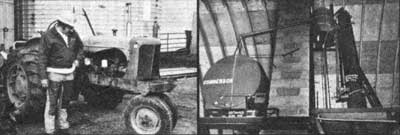
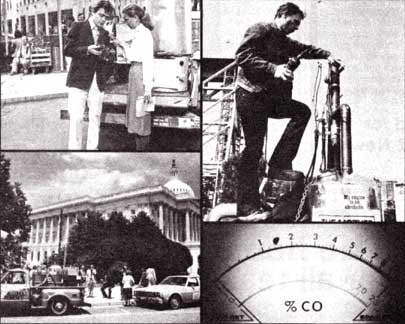

There's certainly nothing special about a 10-year-old pickup truck, but when that same vehicle can drive - indefinitely - without ever having to stop at a gasoline station to fill up . . . well, then the highway veteran becomes something worth writing home about!
No, MOTHER hasn't developed a perpetual motion engine . . . but her researchers have succeeded in adjusting the above-mentioned vehicle's powerplant so that it runs on pure homemade alcohol. The "conversion" wasn't at all difficult, either. In fact, it can be done (in less than two hours!) on just about any vehicle manufactured today ... and with tools you'd find in most anyone's workshop.
There's no reason for alcohol not to be used as motor fuel. Some of the earliest "horseless carriages" ran on it exclusively, and even in modern times, aircraft and racing cars have taken advantage of the fuel's several benefits:
[1] Alcohol burns clean.
[2] The distilled fuel also acts as a cleaning agent within the engine.
[3] An alcohol-burning engine tends to operate at slightly cooler temperatures than does its gasoline-powered counterpart.
Even aside from these mechanical benefits, there are other less obvious advantages to ethanol fuel . . . one of the most important being the fact that it's not dangerously volatile, as is gasoline. Other positive points include the fact that a 200-proof "juice" isn't necessary (MOTHER's pickup runs fine using 180to 190-proof ethanol, and can be operated on fuel with a proof of as low as 160) . . . and, of course, the fact that-after obtaining the appropriate government per mats-a vehicle's owner can manufacture his or her own alcohol at home.
Begin your conversion by gathering up all the tools and hardware you'll need to complete the job. In most cases a screwdriver, a pair of needlenose pliers, a putty knife, a set of assorted end wrenches, a vise-grip tool, and a power drill-with bits ranging in size from .0638" (No. 82) to .0890" (No. 43)-are all you'll need. To make your task easier, though, you might want to refer to a Motor, Chilton, or Glenn auto repair manual for exploded illustrations to guide you through the necessary carburetor disassembly. (Another alternative would be to purchase a carb rebuilding kit for your particular make and model . . . which will not only provide a working diagram, but will also supply you with gaskets and other parts that may get damaged during the stripdown process.) Finally, on most all carburetors manufactured, there is a removable main metering jet . . . you'll probably want to purchase several of these from your automobile dealer (at a cost of less than $1.00 apiece) so you'll be able to easily convert your car back to gasoline fuel if the need arises.
With these preliminary steps taken care of, remove the carburetor air filter housing-and all its hoses, tubes, and paraphernalia-from the engine. Next, disconnect the throttle linkage from the carburetor, and-if your vehicle is so equipped-any choke linkage rods that aren't self-contained on the carb body. (Older vehicles might use a manual choke . . . if this is true of your car or truck, remove the control cable and tie it out of the way.) Now unscrew the fuel line from the carburetor inlet fitting and remove any other hoses that fasten to the "pot" . . . including vacuum and other air control lines. (If you're not quite sure that you can remember exactly where all these hoses belong after you've taken them off, it'd be smart to label them and their fit tings first.
When the carburetor is completely free from all external attachments, remove it from the manifold. (Single-barrel units usually have only two fastening nuts or bolts, while two- or four-barrel models use four-point mounts. Once the carburetor is off the engine, drain the gasoline from it by turning it upside down, and-if it's covered with grime-take the time to clean the assembly off with an automotive degreasing solvent (but not a carburetor cleaner, which would deteriorate rubber parts).
In order to use alcohol fuel in an engine designed to burn gasoline, it's necessary to enlarge the opening in the carburetor's main jet (or jets, if your carb is a multithroat model). Start by removing the air horn from the float bowl as in Photo 1. In most cases there will be a choke stepdown linkage rod-and possibly some other mechanical connection-between the two components. Disconnect these, if you can, before unthreading the air horn's fastening screws.
Next, locate the main jet (Photo 2). Some carburetors-such as the unit pictured-have the jet installed in a main well support (a towerlike mount fastened to the air horn), while others mount the metering device directly in the float bowl body. In any case, you shouldn't have any trouble identifying the removable main jet: It's a round brass fitting-with a hole in its center and a slot in its top-that threads into place.
Now remove the float assembly, unscrew the jet, and measure the diameter of its central orifice. The simplest way to do this is to find a drill bit that fits snugly into the hole, then determine the size of the bit by matching its drill number to its diameter-in thousandths of an inch-using a conversion chart available at your local hardware store or in a machinist's handbook. (You can also use a micrometer to figure the drill size.)
Once you've determined the "normal" size of your gasoline jet's orifice, prepare to increase that dimension by about 40%a· Remember that this isn't a fixed percentage for every engine ... you might have. to drill several different jets-in progressive increments above and below that figure-and try them out (by actually running the vehicle) to see how they work.
For example, MOTHER's six-cylinder truck uses a .056" main jet to operate on gasoline. By enlarging the hole 40% (to .0784') with a No. 47 drill, we made the opening just about right (in fact, that increase was almost perfect on our particular vehicle) for alcohol fuel. If the orifice is too small, it won't allow enough liquid to, enter the system . . . and the engine will backfire and miss. (It may also burn valves if left in such a lean condition for an extended period of time.) On the other hand, if the jet is over-enlarged, the mixture will be too rich and you'll waste fuel.
Be sure to hold the jet with vise-grips while you carefully bore out its central hole and, if possible, use part of the carburetor itself as a "mount" when you drill . . . as in Photo 3. (If you do this, be sure to clean any brass residue out of the carburetor and its components.)
Some Garbs-such as the unit on MOTHER's truck-will need additional idle-circuit enlargement if they're to run properly. To accomplish this easy chore, remove the idle-mixture screw and drill into its orifice with a bit that's slightly larger than the original hole. Be cautioned, however, that this alteration doesn't apply to all types of carburetors . . . it would be best to install the carburetor-with only the main jet enlarged-on the engine and try it out before drilling the fixed idle circuit.
The final change that MOTHER's mechanics made in the carburetor was to shim the idle-mixture screw spring with a couple of small lock washers. This allowed the threaded metering device to be drawn out farther than normal without danger of its vibrating loose. (They also tightened the idle-speed screw by about 1-1/2 turns.)
With all the modifications completed . . . replace the main jet in the carb, install the float, and reassemble the carburetor. Position a fresh gasket on the manifold (make sure both metal surfaces are clean) and bolt the carb assembly in place.
At this time, if you choose, you might want to rig up a dual-fuel system. This will allow the use of either alcohol or gasoline (with a bit of tinkering involved in the switch-over process) and entails only the installation of a second fuel tank and some additional plumbing.
Start by looking your vehicle over and deciding where you want to put your extra tank. On MOTHER's pickup, the container fits perfectly between the cab and the rear fender . . . but-on a passenger car-it might have to be mounted next to the regular gasoline tank (and away from the hot-when-running exhaust system, of course). The vessel itself can be anything from a recycled Freon tank to a fuel tank from a small car . . . but whatever you choose, be certain that the container is leak-free and mounted safely.
Once your car is equipped with a dualfuel capability (our hook-up is illustrated in the accompanying diagram), you can begin to attune the vehicle to its new "feed". Reattach the throttle and choke linkages (and any other hoses you might have removed in the conversion process), then drain your petrol tank and fill it with alcohol (you can also-at this time-fill the auxiliary container with gasoline). Shut off the valve that supplies the new secondary fuel pump, open the alcohol control . . . and start'er up!
It'll take a few seconds to fill the empty float bowl, but the engine should soon start and run at a fast idle. Slowly decrease the RPM's of the engine by backing off on the idle-speed screw until the engine wants to stall. At the same time, it may be necessary to gradually adjust the idle-mixture screw-by 1/4-turn increment-still the engine's "roughness" evens out. Eventually, the vehicle should idle nicely . . . (though it nay run slightly faster than usual).
Now replace the air cleaner housing and take your car for a drive . . . it should perform normally. After driving about 10 miles at cruising speeds, it's important that you remove the spark plugs and check their electrodes. If the tips are covered with a white coating, the combustion chamber is getting too hot . . . dismantle the carburetor again and enlarge the jet by one drill size (remember . . . the lower the number, the larger the bit). Test the car again and recheck the plugs . . . they should be covered with an even, light tan coating.
Remember that every engine is different . . . and, as such, each will require a bit of "fiddling" before it will operate normally. If your alcohol-powered convert doesn't perform to your satisfaction, there are several remedies you can try.
First, advance the timing several degrees by turning the distributor housing opposite to the direction in which the rotor spins. (Don't overdo it, or the engine will "ping" with pre-ignition.) You can also disconnect the vacuum advance line to the distributor and plug it with a screw or ball bearing . . . this will prevent a too rapid spark advance. You might try closing the gap in the spark plugs by .004" to .006", too. If you care to get more involved, raising the compression ratio-either by simply "milling" the head or by installing high-compression pistons-will improve both engine performance and fuel economy.
It may, of course, prove impractical-because of the unit's particular design features-to alter your car's original carburetor. The best solution in such a case would be to buy a rebuilt carburetor of an older vintage. The bolt patterns on most manifolds haven't changed for a decade or more, and nearly all carburetors made in the 1980's can be converted without trouble.
Mother's pickup is still going strong after over 5,000 miles. It starts easily in the morning and runs well when it reaches operating temperature (we've found that a manual choke aids in the "warming up" process). Fuel economy isn't quite as good in the alcohol mode, but it's close to normal... and power and acceleration are unaffected.
Again it's important to remember that MOM's truck is experimental, not perfect... so keep an eye on your converted engine and be ready to spot a problem before it gets serious. We have big plans for the future, though, and-as each new issue appears-we hope to have a few more improvements for you...beginning with a wintertime starting system scheduled for MOTHER NO. 60.
EDITOR'S NOTE: Though the federal government-as well as many states-has acted to eliminate road use taxes on renewable fuels, it may be illegal to operate your alcohol-powered vehicle on highways in certain states. Check with your state authorities before you venture out on public roads.
And, if you'd like to be able to distill your own ethanol fuel, MOTHER's Alcohol Fuel Kit-with still plans, mash recipes, and details on applying for a Bureau of Alcohol, Tobacco, and Firearms permit-is just what you need. Information on how to order the complete package is on page 145 of this magazine.
It would be hard to imagine any group of people who are harder hit by fuel shortages than are this nation's farmers. And, of course, when our agriculturists-who supply so much of the world's "bread and butter"-suffer, millions of other folks share the effects ...in the form of highpriced (or even completely unavailable) food.
But one particular granger family-the Zeithamers of Alexandria, Minnesota-is simply not about to take any "gasoline drought"-real or contrived-sitting down ... because these folks are making their own alcohol fuel for about half the price of the commercial gasoline it's replacing.
The Zeithamer dairy farm-a 50-cow, 500-acre spread-requires more than 10,000 gallons of combustible petroleum to get through each year. Increasing fuel costs were enough of a burden for the Minnesotans to contend with, but a scarcity of the precious liquid could have resulted in disaster . . . which is one reason why Archie (the senior Zeithamer) and his son Alan decided to convert to alcohol fuel.
"It's nothing new, you know," Archie says. "Farmers were burning straight alcohol in their tractors-years ago-when they couldn't get anything else . . . there's no doubt it works. And no one else is better equipped to handle alcohol production than are farmers. We have the raw materials right on hand, and we're far more flexible than any large commercial distilleries could be because we can make fuel out of whatever surplus crop we have available. Furthermore, we're producing our ethanol right here where it's going to be used . . . we aren't burning up half our product trying to deliver it to some distribution point located three-or more-states away."
The cost factor is another reason why Archie feels that on-farm distilleries are the most practical. The Zeithamers' total production plant investment was only $10,000-not an overwhelming sum for a farm the size of theirs-and the operating expenses are also minimal, since the plant is usually fired with wood scraps. The Minnesota farmers can make 500 gallons of alcohol fuel per week, which-with all expenses except labor considered-will cost them only 50 cents a gallon!
The Zeithamers use a 4,000-gallon oil tank-mounted over a masonry firebox-as their cooking and fermenting vat, and they've equipped the container with an electrically powered agitator that constantly stirs the mash mixture while it's being heated (thereby eliminating the need to "babysit" the process in the cooking stage). The father and son team shell and grind their corn to a coarse consistency, then add it to the tank, with water, in a ratio of about 28 gallons of liquid to each bushel of corn. Yeast and enzymes are also added during the process, and the mixture is allowed to cool and ferment for about three days . . . after which, the resultant "still beer" (it contains about 7-1/2 to 10% alcohol) is strained through a filter and temporarily stored in a 10,000-gallon tank which is set, underground, beneath their fermentation vat.
The Minnesotans then pump the "beer" mixture through a preheating chamber and on into their "stripper" column . . . a 12-inch-diameter, 17-foot vertical pipe (containing 76 perforated plates) which separates the alcohol vapors from the water mixture. This design allows for any partially distilled mash to fall back to the base of the tower to be recycled. The alcohol vapors are taken off the top of the column, fully liquefied in a condenser, and finally drained into a 1,000-gallon storage container to be denatured. (The denaturing process involves nothing more than the addition of several gallons of gasoline and ketone to the tankful of spirits . . . in order to guarantee that the fuel cannot be used as a beverage.)
According to Alan, the Minnesota still produces 160- to 180-proof alcohol at a rate of up to 28 gallons per hour. "We could get a purer product, but we don't need it. Our equipment runs fine on 160-proof fuel, so it would be senseless to use extra energy trying to make the ethanol any stronger. As it is, we've got a very favorable balance: Our product is worth a lot more-both economically and in terms of energy consum-than what we use to produce it."
The Gopher Staters are also in the process of designing several additional systems that will make their alcohol production plant-and their farm as a whole-more efficient. The still's waste heatand carbon dioxide from the fermentation process-will soon be used to supply a greenhouse, and AI plans to start construction on a methane digester next year . . . which will, of course, utilize cow manure to produce enough of the flammable gas to "fire" the still. (Other sources of heat-including corncobs, waste oil, and used tires-are also being considered, since the Zeithamers claim these fuels can be burned without causing pollution . . . by using a water injection system.) The farm family is using the alcohol plant's DDGS (Distiller's Dried Grains and Solubles) by-products as cattle feed, too, and they're even saving water by recycling the liquid through the distilling system rather than starting fresh on each alcohol "run".
The Zeithamers see no future problems with their alcohol production (especially since the plant will pay for itself in less than four years). Meanwhile, the younger Zeithamer is also looking into the potential of potatoes as a raw material, has been experimenting with an abnormally hardy strain of yeast (which can function in a 16% alcohol mash solution), and is researching various other methods of isolating alcohol from the mash (either by using a freezing process or by adding some form of potash).
Those answers might still be a few years down the road, but it seems that the Zeithamers are doing just fine-on their own-right now!
What do you do after you've converted your truck into an alcohol-powered vehicle? You take 'er for a spin, of course!
As many of you already know (due to the media coverage that this magazine's alcohol experiments have received in the past few months), MOTHER wasn't content to merely [1] be instrumental in bringing the fact that farm-produced ethanol could be used as a fuel to the attention of a great many people, [2] design, build, and make the plans available for an efficient backyard still that can be set up for less than $300, [3] tell folks how to apply to the Bureau of Alcohol, Tobacco, and Firearms for a license to distill fuel alcohol, [4] influence the government to propose less stringent regulations and reduced "red tape" for backyard ethanol production, and [5] convert a pickup truck into a gasoline/alcohol "dual fuel" vehicle for less than $25!
Nope, after we'd done all of those things, we loaded that "fuel-fixing" still of ours in the back of our alcohol-powered truck and set out on the road . . . to bring the good word about renewable ethanol fuel to folks-in the govern ment and "on the street"-who hadn't gotten the message yet!
Once we'd "gotten our feet wet" with an introductory press conference and distillation demonstration held out on MOTHER's square-mile research property, the "moonshine-powered" pickup wound its way toward New York City . . . making news-along the way-in Greenville, South Carolina . . . Charlotte, North Carolina . . . and Towson, Maryland.
MOTHER's alternative fuel caravan arrived in the Big Apple on the weekend of June 23-which just happened to be the peak of that city's summer gas crunch-and you can bet that the truck (with "Experimental Alcohol-Powered Vehicle" emblazoned across its sides) attracted a lot of notice. But when-on Monday, June 24-MOTHER's researchers turned independent taxi driver Willie Bly's vehicle into an alcohol-burner (the car then ran like a top, and passed the EPA emis sions tests with flying colors), the city really sat up and paid attention!
The on-the-spot taxi conversion drew excited reviews from all three major television networks . . . and attracted the interest of New York Congressman Mario Biaggi, who-along with North Carolina's Senator Jesse Helms and Iowa Congressman Berkely Bedell ... both of whom have been strong supporters of the home-produced alcohol movement-urged MOTHER to take her "show" to Washington, D.C.
So the still and truck-now joined by an enthusiastic Willie and his alcohol-burning taxi-headed out on the highway again. Our D.C. display took place right on the Capitol grounds, and gave a number of Senators and Congressmen-as well as representatives of NBC television, the Associated Press, and the Washington Post-a chance to see for themselves that a reasonably priced, efficient, backyard liquid fuel is not many years and several multimillion-dollar research grants down the road but is ready to be used today!
All in all it was quite a trip, and the weary researchers headed for their North Carolina mountain homes-after stopping in Baltimore and again in New York City for interviews and so forth-feeling pretty good about how well they'd spread the word on renewable fuels.
After a scant half-day's rest, however, the trusty truck was fired up again ... this time to return to New York for a live demonstration on the Today program and a chance to show over eight million folks-all across the United States-just how easy it is to convert their cars to ethanol.
As MOTHER NO. 59 goes to press, the alcohol fuel "bandwagon" shows no signs of slowing down. Here's just a sampling of some of the events in store for MOTHER's researchers: They'll be featured in an issue of Time magazine (which should be out long before you receive this copy of MOTHER . . . so check your local library if you missed the story), a very possible appearance on Good Morning America, a trip to Oshkosh, Wisconsin for the Experimental Aircraft Association Fly-In-where the boys plan to convert an airplane to alcohol fuel, fill it up from the still, and put "moonshine" in the sky!-as well as continued coverage of our experiments by newspapers, radio stations, and television stations everywhere.
Keep your eyes open, 'cause MOTHER is makin' news!
|
STAFF PHOTOS Run your vehicle on renewable fuel! |
STAFF PHOTOS [1] The first conversion step is to remove the air horn from the float bowl. [2] Then remove the float assembly and unscrew the brass main jet. [3] If possible, use part of the carburetor as a ""mount"" while you enlarge the jet about 40%. |
STAFF Alan Zeithamer with an ""alky""-fueled tractor... and the ""juice""-making still. |
|
 STAFF PHOTOS CLOCKWISE FROM ABOVE, LEFT: Our truck and taxi in Washington, D.C... Today show's Jane Pauley ""talks alky"" with MOTHER's Ray Healy .... Clarence Goosen assembles the still .... Testers can't believe the cab's ""clean"" emissions. |
 RICHARD P. OWEN |
|